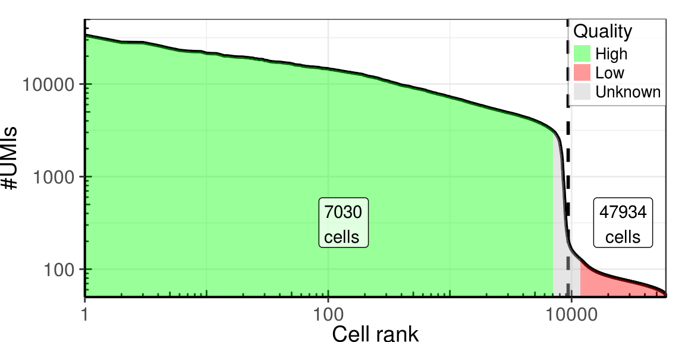
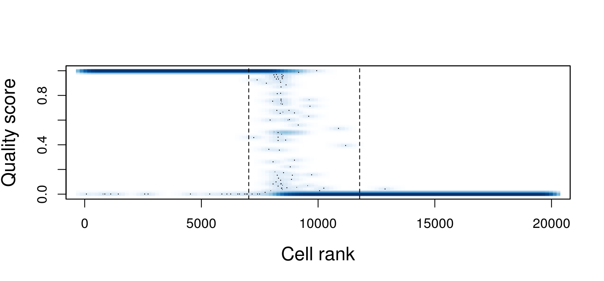
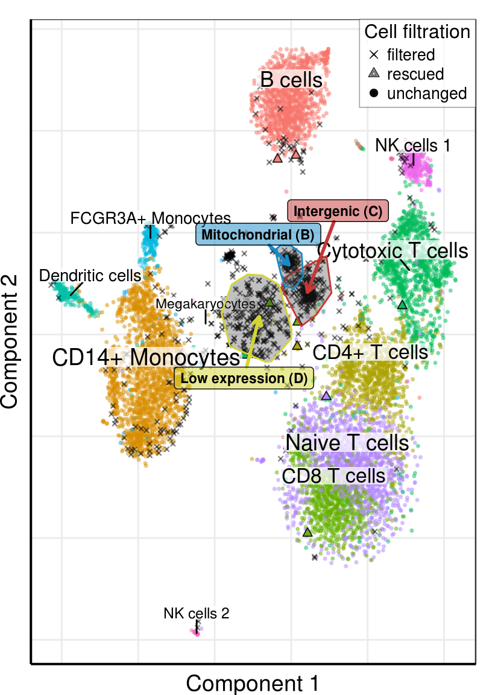
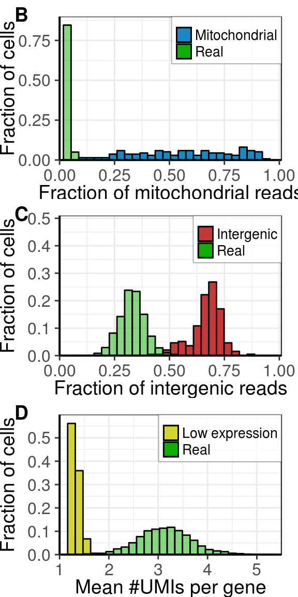
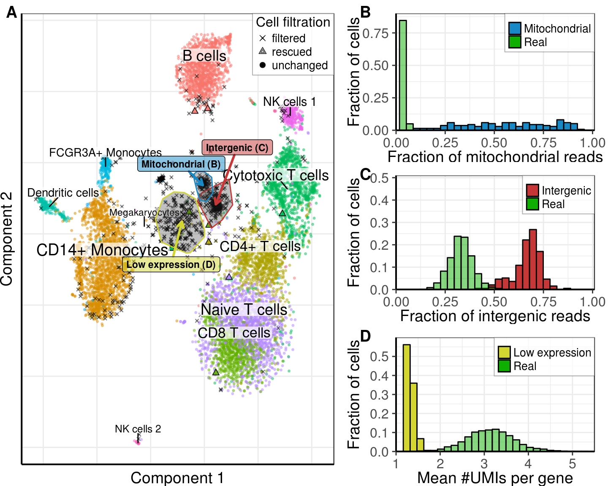
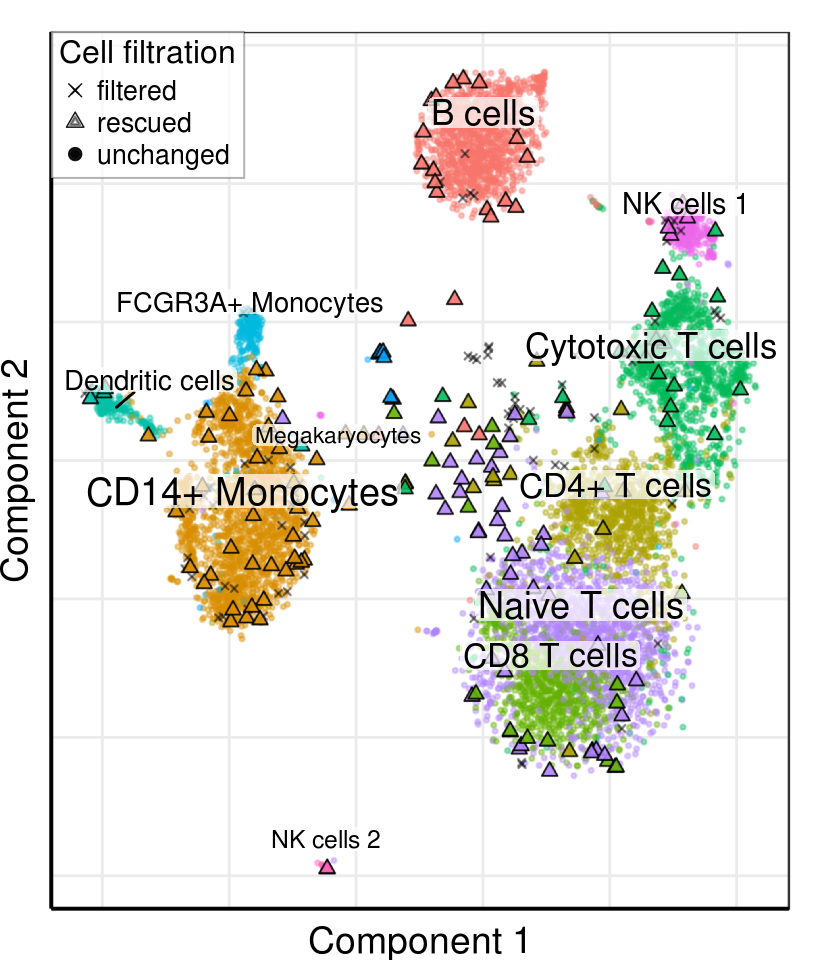
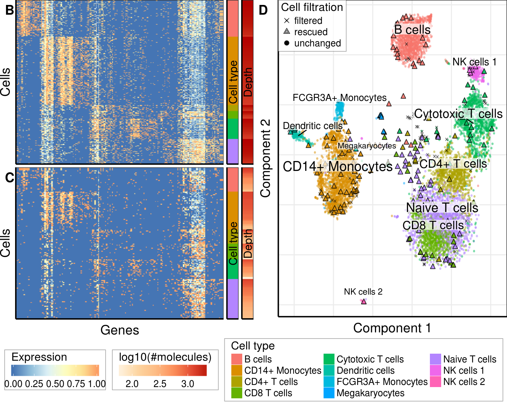
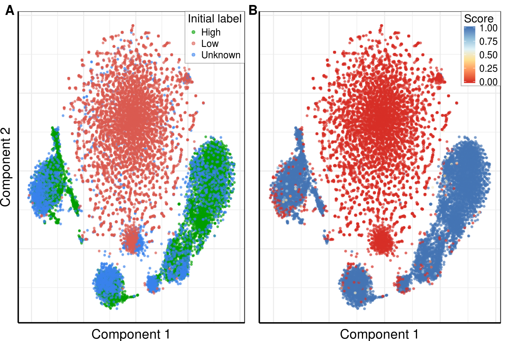

Source file: notebooks/low_quality_cells/validation_pbmc8k.Rmd
Last updated: 2018-05-16
Code version: 71117d5
library(cowplot)
library(ggplot2)
library(ggsci)
library(ggpubr)
library(ggrastr)
library(ggrepel)
library(dplyr)
library(parallel)
library(Seurat)
library(dropestr)
library(dropEstAnalysis)
theme_set(theme_base)
set.seed(42)
kOutputFolder <- '../../output/'
kPlotsFolder <- paste0(kOutputFolder, 'figures/')
kDataPath <- '../../data/dropest/10x/pbmc8k/'
kEstFolder <- paste0(kDataPath, 'est_11_11_umi_quality/')
k10xFolder <- paste0(kDataPath, 'filtered_gene_bc_matrices/GRCh38/')# holder <- readRDS(paste0(kEstFolder, 'pbmc8k.rds'))
# holder$reads_per_umi_per_cell <- NULL
# saveRDS(holder, paste0(kEstFolder, 'pbmc8k_no_umi.rds'))
holder <- readRDS(paste0(kEstFolder, 'pbmc8k_no_umi.rds'))cm_10x <- Read10xMatrix(k10xFolder, use.gene.names=T)
cm_10x <- cm_10x[, order(Matrix::colSums(cm_10x), decreasing=F)]umis_per_cell <- sort(Matrix::colSums(holder$cm_raw), decreasing=T)
est_cell_num <- EstimateCellsNumber(umis_per_cell)PlotCellsNumberLogLog(umis_per_cell, estimate.cells.number=T) +
theme_pdf(legend.pos=c(1, 1))
scores <- ScorePipelineCells(holder, mit.chromosome.name='MT', predict.all=T,
verbose=T)[names(umis_per_cell)]Explained variance after PCA: 98.2%; used 3 PCs.
Used features: ReadsPerUmi, LowExpressedGenesFrac, IntergenicFrac.PlotCellScores(scores[1:20000], cells.number=est_cell_num)
pdf(paste0(kPlotsFolder, 'lq_pbmc8k_scores.pdf'), width=7.5, height=3.5)
par(mar=c(2.7,2.5,0,0.3), tck=-0.02, mgp=c(1.4,0.3,0))
PlotCellScores(scores[1:20000], cells.number=est_cell_num)
invisible(dev.off())intersect_cbs <- names(scores[1:est_cell_num$expected])
intersect_cbs <- intersect_cbs[scores[intersect_cbs] > 0.9]
unknown_cell_scores <- scores[(est_cell_num$expected + 1):length(scores)]
rescued_cbs <- names(unknown_cell_scores)[unknown_cell_scores > 0.5]
unknown_cell_scores <- scores[1:est_cell_num$expected]
filtered_cbs <- names(unknown_cell_scores)[unknown_cell_scores < 0.1]
c(Uncahnged=length(intersect_cbs), Rescued=length(rescued_cbs),
Filtered=length(filtered_cbs))Uncahnged Rescued Filtered
8454 12 844 r_cm_rescued <- holder$cm_raw[, c(names(umis_per_cell)[1:est_cell_num$expected],
rescued_cbs)]
r_cm_rescued <- r_cm_rescued[grep("^[^;]+$", rownames(r_cm_rescued)),]
if (!all(colnames(cm_10x) %in% colnames(r_cm_rescued)))
stop("All 10x cells must be presented")# r_rescued <- GetPagoda(r_cm_rescued, n.cores=30, tsne.iters.num=3000)
# r_rescued$getEmbedding(type='PCA', perplexity=50, embeddingType = 'tSNE', max_iter=3000)
# saveRDS(r_rescued, paste0(kEstFolder, 'pagoda.rds'))
r_rescued <- readRDS(paste0(kEstFolder, 'pagoda.rds'))clusters_annotated <- read.csv(paste0(kEstFolder, 'clusters_annotated.csv')) %>%
(function(x) setNames(as.character(x$Type), x$Barcode))
clusters <- r_rescued$clusters$PCA$infomap
notannotated_cells <- setdiff(names(clusters), names(clusters_annotated))clusters_annotated_resc <- AnnotateClustersByGraph(r_rescued$graphs$PCA, clusters_annotated,
notannotated_cells, mc.cores=10)
rescued_clusters <- clusters_annotated_resc[rescued_cbs]tsne <- r_rescued$embeddings$PCA$tSNE
intergenic_inf <- names(clusters)[clusters == 11] %>% intersect(filtered_cbs) %>%
GetCellsChull(tsne, offset.y=-0.5)
mitochondrial_inf <- names(clusters)[clusters == 16] %>% intersect(filtered_cbs) %>%
GetCellsChull(tsne)
low_rpu_inf <- names(clusters)[clusters == 7] %>% intersect(filtered_cbs) %>%
GetCellsChull(tsne, chull.quantile=0.8)
chull_list <- list(intergenic_inf, mitochondrial_inf, low_rpu_inf) %>%
lapply(`[[`, 'chull') %>% lapply(as.data.frame) %>%
setNames(c('Intergenic', 'Mitochondrial', 'Low expression'))
label_colors <- c('#c63737', '#1989c6', '#d3d631') %>% setNames(names(chull_list))
labels_df <- Reduce(rbind, lapply(chull_list, colMeans)) %>% as.data.frame() %>%
mutate(Text=paste0(names(chull_list), ' (', c('C', 'B', 'D'), ')'), Color=label_colors) %>%
mutate(OffsetX=c(4, -4, -2), OffsetY=c(8, 3, -6))gg_labs <- labs(x='tSNE-1', y='tSNE-2')
gg_all <- PlotPagodaEmbeding(r_rescued, clusters=r_rescued$clusters$PCA$infomap,
mark.clusters=F, font.size=NULL, raster=T) +
theme_pdf(show.ticks=F) + gg_labsplot_clusters <- setdiff(names(clusters_annotated), c(filtered_cbs, rescued_cbs))
gg_base <- PlotFiltrationResults(r_rescued, r_rescued$clusters$PCA$infomap[plot_clusters],
filtered.cbs=filtered_cbs, raster.width=5, raster.height=5,
mark.clusters=F) +
theme_pdf(legend.pos=c(1, 1), show.ticks=F) + gg_labs
gg <- Reduce(`+`, lapply(names(chull_list), function(n)
geom_polygon(data=chull_list[[n]], mapping=aes(x=V1, y=V2), alpha=0.3,
color=label_colors[n])), init=gg_base)
gg_repels <- lapply(1:3, function(i)
geom_label_repel(data=labels_df[i,], mapping=aes(x=V1, y=V2, label=Text),
fill=alpha(labels_df$Color[i], 0.5), nudge_x=labels_df$OffsetX[i],
nudge_y=labels_df$OffsetY[i], segment.size=1, size=3, point.padding=0,
arrow=arrow(length = unit(0.02, 'npc')), color='black',
segment.color=labels_df$Color[i], fontface='bold'))
gg_filt <- Reduce(`+`, gg_repels, init=gg)plot_clusters <- setdiff(names(clusters_annotated), c(filtered_cbs, rescued_cbs))
gg <- PlotFiltrationResults(r_rescued, clusters_annotated[plot_clusters],
filtered.cbs=filtered_cbs, rescued.clusters=rescued_clusters,
raster.width=4.28, raster.height=6)
gg <- Reduce(`+`, lapply(names(chull_list), function(n)
geom_polygon(data=chull_list[[n]], mapping=aes(x=V1, y=V2), alpha=0.3,
color=label_colors[n])), init=gg)
gg_repels <- lapply(1:3, function(i)
geom_label_repel(data=labels_df[i,], mapping=aes(x=V1, y=V2, label=Text),
fill=alpha(labels_df$Color[i], 0.5), nudge_x=labels_df$OffsetX[i],
nudge_y=labels_df$OffsetY[i], segment.size=1, size=3, point.padding=0,
arrow=arrow(length = unit(0.02, 'npc')), color='black',
segment.color=labels_df$Color[i], fontface='bold'))
gg <- Reduce(`+`, gg_repels, init=gg)
gg_tsne_noise <- gg + theme_pdf(legend.pos=c(1, 1), show.ticks=F)
gg_tsne_noise
bc_data <- PrepareLqCellsDataPipeline(holder, mit.chromosome.name='MT', scale=F)real_cell_color <- '#0faf00'
gg <- function(y.max, filt.color) {
ggplot() + scale_y_continuous(expand=c(0, 0), name='Fraction of cells',
limits=c(0, y.max)) +
guides(fill=guide_legend(title=NULL)) + theme_pdf(legend.pos=c(1, 1)) +
scale_fill_manual(values=as.vector(c(filt.color, real_cell_color)))
}
gg1 <- gg(0.9, label_colors['Mitochondrial']) +
geom_histogram(aes(x=bc_data[mitochondrial_inf$cbs, ]$MitochondrionFraction,
y=..count.. / sum(..count..), fill = 'Mitochondrial'),
color='black') +
geom_histogram(aes(x=bc_data[intersect_cbs, ]$MitochondrionFraction,
y=..count.. / sum(..count..), fill='Real'), alpha=0.5,
color='black') +
scale_x_continuous(limits=c(0, 1.01), expand=c(0, 0),
name='Fraction of mitochondrial reads')
gg2 <- gg(0.51, label_colors['Intergenic']) +
geom_histogram(aes(x=bc_data[intergenic_inf$cbs, ]$IntergenicFrac,
y=..count.. / sum(..count..), fill = 'Intergenic'),
color='black') +
geom_histogram(aes(x=bc_data[intersect_cbs, ]$IntergenicFrac,
y=..count.. / sum(..count..), fill='Real'),
alpha=0.5, color='black') +
scale_x_continuous(limits=c(0, 1.01), expand=c(0, 0),
name='Fraction of intergenic reads')
gg3 <- gg(0.6, label_colors['Low expression']) +
geom_histogram(aes(x=bc_data[low_rpu_inf$cbs, ]$UmiPerGene,
y=..count.. / sum(..count..), fill = 'Low expression'),
color='black') +
geom_histogram(aes(x=bc_data[intersect_cbs, ]$UmiPerGene,
y=..count.. / sum(..count..), fill='Real'), alpha=0.5,
color='black') +
scale_x_continuous(limits=c(1, 5.5), expand=c(0, 0), name='Mean #UMIs per gene')
gg_distributions <- plot_grid(gg1, gg2, gg3, nrow=3, align='v', labels=c('B', 'C', 'D'),
label_x=0.025)gg_distributions
gg_noise_fig <- plot_grid(gg_tsne_noise, gg_distributions, ncol=2, rel_widths=c(1, 0.75),
labels=c('A', NULL))gg_noise_fig
ggsave(paste0(kPlotsFolder, 'fig_pbmc8k_lq_cells.pdf'), gg_noise_fig, width=7.5, height=6)cbs_10x <- colnames(cm_10x)
rescued_cbs <- names(scores)[scores > 0.9] %>% setdiff(cbs_10x)
filtered_cbs <- names(scores)[scores < 0.1] %>% intersect(cbs_10x)
intersect_cbs <- names(scores)[scores > 0.9] %>% intersect(cbs_10x)
rescued_clusters <- clusters_annotated_resc[rescued_cbs]
c(Unchanged=length(cbs_10x), Rescued=length(rescued_cbs),
Filtered=length(filtered_cbs))Unchanged Rescued Filtered
8391 172 80 plot_clusters <- setdiff(cbs_10x, filtered_cbs)
gg_tsne <- PlotFiltrationResults(r_rescued, clusters=clusters_annotated[plot_clusters],
filtered.cbs=filtered_cbs, rescued.clusters=rescued_clusters,
raster.width=4.28, raster.height=5) +
theme_pdf(legend.pos=c(0, 1), show.ticks=F)
gg_tsne
tested_clusts <- sort(c(clusters_annotated[intersect_cbs], rescued_clusters))
tested_clusts <- as.factor(tested_clusts) %>% setNames(names(tested_clusts))
large_rescued <- which(table(clusters_annotated[rescued_cbs]) >= 10) %>% names()
tested_clusts <- tested_clusts[tested_clusts %in% large_rescued]rescued_table <- TableOfRescuedCells(clusters_annotated_resc[c(intersect_cbs, rescued_cbs)],
rescued_cbs)
write.csv(rescued_table, paste0(kOutputFolder, "tables/rescued_cbc_pbmc8k.csv"), row.names=F)
rescued_table| Cell type | Total num. of cells | Num. of rescued | Fraction of rescued, % |
|---|---|---|---|
| B cells | 1239 | 23 | 1.86 |
| CD14+ Monocytes | 1833 | 40 | 2.18 |
| CD4+ T cells | 956 | 15 | 1.57 |
| CD8 T cells | 972 | 16 | 1.65 |
| Cytotoxic T cells | 1153 | 21 | 1.82 |
| Dendritic cells | 224 | 4 | 1.79 |
| FCGR3A+ Monocytes | 197 | 0 | 0.00 |
| Megakaryocytes | 44 | 5 | 11.36 |
| Naive T cells | 1452 | 42 | 2.89 |
| NK cells 1 | 322 | 4 | 1.24 |
| NK cells 2 | 69 | 2 | 2.90 |
seurat_clusters <- tested_clusts
seurat_cm <- r_cm_rescued[, names(seurat_clusters)]
seurat_cm <- seurat_cm[Matrix::rowSums(seurat_cm) > 200, ]
srt <- CreateSeuratObject(raw.data = seurat_cm, project = "pbmc8k", display.progress=F)
srt <- NormalizeData(object = srt, normalization.method = "LogNormalize",
scale.factor = 10000, display.progress=F)
srt <- FindVariableGenes(object = srt, mean.function = ExpMean,
dispersion.function = LogVMR, x.low.cutoff = 0.0125,
x.high.cutoff = 3, y.cutoff = 1, do.plot=F, display.progress=F)
srt <- ScaleData(object = srt, vars.to.regress = "nUMI", display.progress=F)
save(srt, file="../../output/pbmc8k_srt.Rda")
# load("../../output/pbmc8k_srt.Rda")srt@ident <- as.factor(seurat_clusters[colnames(srt@raw.data)])
names(srt@ident) <- colnames(srt@raw.data)
compared_clusters <- unique(srt@ident) %>% as.character()
cluster_markers <- mclapply(compared_clusters, function(i)
mclapply(setdiff(compared_clusters, i), FindClusterMarkers, i, srt, mc.cores=5),
mc.cores=6)
overexpressed_genes <- GetOverexpressedGenes(srt, compared_clusters, cluster_markers,
expression.threshold=0.4)
length(overexpressed_genes)[1] 177tested_clusts <- seurat_clusters
separation <- c(setNames(rep('rescued', length(rescued_cbs)), rescued_cbs),
setNames(rep('real', length(intersect_cbs)), intersect_cbs))
umis_per_cb_subset <- log10(Matrix::colSums(r_cm_rescued[, names(tested_clusts)]))
tested_clusts <- tested_clusts[order(tested_clusts, -umis_per_cb_subset)]
de_genes <- overexpressed_genesraster_width <- 3
raster_height <- 3
raster_dpi <- 100
plot_df <- ExpressionMatrixToDataFrame(r_rescued$counts[names(tested_clusts), de_genes],
umis_per_cb_subset, tested_clusts,
filtration.type=separation)
plot_df <- plot_df %>% filter(UmisPerCb < 3.4)
plot_dfs <- split(plot_df, plot_df$FiltrationType)
ggs <- lapply(plot_dfs, HeatmapAnnotGG, umi.per.cell.limits=range(plot_df$UmisPerCb),
raster.width=raster_width, raster.height=raster_height, raster.dpi=raster_dpi)
legend_guides <- list(HeatmapLegendGuide('Expression'),
HeatmapLegendGuide('Cell type', guide=guide_legend, ncol=3),
HeatmapLegendGuide('log10(#molecules)'))
gg_legends <- mapply(`+`, ggs$real, legend_guides, SIMPLIFY=F) %>%
lapply(`+`, theme(legend.margin=margin(l=4, r=4, unit='pt'))) %>% lapply(get_legend)
ggs$real$heatmap <- ggs$real$heatmap + rremove('xlab') + ylab('Cells')
ggs$rescued$heatmap <- ggs$rescued$heatmap + labs(x = 'Genes', y = 'Cells')
ggs_annot <- lapply(ggs, function(gg)
plot_grid(plotlist=lapply(gg, `+`, theme(legend.position="none", plot.margin=margin())),
nrow=1, rel_widths=c(1.5, 0.1, 0.1), align='h'))
gg_legends_plot <- plot_grid(plotlist=gg_legends, nrow=3, align='v')gg_left <- plot_grid(ggs_annot$real, ggs_annot$rescued, nrow=2, labels=c('B', 'C'))
gg_right <- gg_tsne + theme(plot.margin=margin(l=0.1, unit='in'), axis.text=element_blank(),
axis.ticks=element_blank())
gg_bottom <- plot_grid(plotlist=gg_legends[c(1, 3, 2)], ncol=3, rel_widths=c(1, 1, 2.6))
gg_10x <- plot_grid(gg_left, gg_right, labels=c('', 'D'), ncol=2) %>%
plot_grid(gg_bottom, nrow=2, rel_heights=c(1, 0.21), align='v')gg_10x
ggsave(paste0(kPlotsFolder, 'supp_comparison_with_10x.pdf'), gg_10x, width=7.5, height=6)kEmbeddingType <- 'tSNE'
# kEmbeddingType <- 'largeVis'
cbs_full <- names(scores)[1:20000]
r_cm_full <- holder$cm_raw[, cbs_full]
r_full <- GetPagoda(r_cm_full, n.cores=1, embeding.type=kEmbeddingType)20000 cells, 14590 genes; normalizing ... using plain model winsorizing ... log scale ... done.
calculating variance fit ... using gam 2460 overdispersed genes ... 2460 persisting ... done.
running PCA using 1000 OD genes .... done
calculating distance ... pearson ...running tSNE using 1 cores:
- point 10000 of 20000
- point 20000 of 20000rast_width <- 7.5 / 2
rast_height <- 5
rast_dpi <- 150
initial_labels <- dropestr:::EstimateCellsQuality(Matrix::colSums(r_cm_full))
gg1 <- PlotPagodaEmbeding(r_full, clusters=initial_labels, mark.clusters=F, show.legend=T, alpha=0.6, embeding.type=kEmbeddingType,
size=0.5, raster=T, raster.width=rast_width, raster.height=rast_height, raster.dpi=rast_dpi) +
scale_color_manual(values=scales::hue_pal(l=55)(3)[c(2, 1, 3)], name='Initial label') +
guides(color=guide_legend(override.aes=list(size=1.2))) +
theme_pdf(legend.pos=c(1, 1), show.ticks=F)
gg2 <- PlotPagodaEmbeding(r_full, colors=scores, mark.clusters=F, show.legend=T, alpha=0.6, embeding.type=kEmbeddingType,
size=0.5, raster=T, raster.width=rast_width, raster.height=rast_height, raster.dpi=rast_dpi) +
scale_color_distiller(palette='RdYlBu', direction=1, limits=c(0, 1), name='Score') +
theme_pdf(legend.pos=c(1, 1), show.ticks=F)
gg_fig <- plot_grid(gg1, gg2 + rremove("ylab"), labels='AUTO', label_x=c(0, -0.05))gg_fig
ggsave(paste0(kPlotsFolder, 'supp_pbmc8k_initial_labeling.pdf'), gg_fig, width=7.5, height=5)| value | |
|---|---|
| version | R version 3.4.1 (2017-06-30) |
| os | Ubuntu 14.04.5 LTS |
| system | x86_64, linux-gnu |
| ui | X11 |
| language | (EN) |
| collate | en_US.UTF-8 |
| tz | America/New_York |
| date | 2018-05-16 |
| package | loadedversion | date | source | |
|---|---|---|---|---|
| 1 | acepack | 1.4.1 | 2016-10-29 | CRAN (R 3.4.1) |
| 2 | AnnotationDbi | 1.32.3 | 2016-01-28 | Bioconductor |
| 3 | ape | 5.0 | 2017-10-30 | CRAN (R 3.4.1) |
| 4 | assertthat | 0.2.0 | 2017-04-11 | CRAN (R 3.4.1) |
| 5 | backports | 1.1.2 | 2017-12-13 | CRAN (R 3.4.1) |
| 7 | base64enc | 0.1-3 | 2015-07-28 | cran (@0.1-3) |
| 8 | bindr | 0.1 | 2016-11-13 | CRAN (R 3.4.1) |
| 9 | bindrcpp | 0.2 | 2017-06-17 | CRAN (R 3.4.1) |
| 10 | Biobase | 2.30.0 | 2016-01-28 | Bioconductor |
| 11 | BiocGenerics | 0.16.1 | 2016-01-28 | Bioconductor |
| 12 | bit | 1.1-12 | 2014-04-09 | CRAN (R 3.4.1) |
| 13 | bit64 | 0.9-7 | 2017-05-08 | CRAN (R 3.4.1) |
| 14 | bitops | 1.0-6 | 2013-08-17 | CRAN (R 3.4.1) |
| 15 | blob | 1.1.0 | 2017-06-17 | CRAN (R 3.4.1) |
| 16 | brew | 1.0-6 | 2011-04-13 | CRAN (R 3.4.1) |
| 17 | broom | 0.4.3 | 2017-11-20 | CRAN (R 3.4.1) |
| 18 | Cairo | 1.5-9 | 2015-09-26 | CRAN (R 3.4.1) |
| 19 | caret | 6.0-78 | 2017-12-10 | CRAN (R 3.4.1) |
| 20 | caTools | 1.17.1 | 2014-09-10 | CRAN (R 3.4.1) |
| 21 | checkmate | 1.8.5 | 2017-10-24 | CRAN (R 3.4.1) |
| 22 | class | 7.3-14 | 2015-08-30 | CRAN (R 3.4.0) |
| 23 | clisymbols | 1.2.0 | 2017-05-21 | CRAN (R 3.4.1) |
| 24 | cluster | 2.0.6 | 2017-03-16 | CRAN (R 3.4.0) |
| 25 | codetools | 0.2-15 | 2016-10-05 | CRAN (R 3.4.1) |
| 26 | colorspace | 1.3-2 | 2016-12-14 | CRAN (R 3.4.1) |
| 28 | cowplot | 0.9.2 | 2017-12-17 | CRAN (R 3.4.1) |
| 29 | CVST | 0.2-1 | 2013-12-10 | CRAN (R 3.4.1) |
| 30 | data.table | 1.10.4-3 | 2017-10-27 | CRAN (R 3.4.1) |
| 32 | DBI | 0.7 | 2017-06-18 | CRAN (R 3.4.1) |
| 33 | ddalpha | 1.3.1 | 2017-09-27 | CRAN (R 3.4.1) |
| 34 | dendsort | 0.3.3 | 2015-12-14 | cran (@0.3.3) |
| 35 | DEoptimR | 1.0-8 | 2016-11-19 | CRAN (R 3.4.1) |
| 36 | diffusionMap | 1.1-0 | 2014-02-20 | CRAN (R 3.4.1) |
| 37 | digest | 0.6.15 | 2018-01-28 | cran (@0.6.15) |
| 38 | dimRed | 0.1.0 | 2017-05-04 | CRAN (R 3.4.1) |
| 39 | diptest | 0.75-7 | 2016-12-05 | CRAN (R 3.4.1) |
| 40 | doParallel | 1.0.11 | 2017-09-28 | CRAN (R 3.4.1) |
| 41 | dplyr | 0.7.4 | 2017-09-28 | CRAN (R 3.4.1) |
| 42 | dropEstAnalysis | 0.6.0 | 2018-05-16 | local (VPetukhov/dropEstAnalysis@NA) |
| 43 | dropestr | 0.7.7 | 2018-03-17 | local (@0.7.7) |
| 44 | DRR | 0.0.2 | 2016-09-15 | CRAN (R 3.4.1) |
| 45 | dtw | 1.18-1 | 2015-09-01 | CRAN (R 3.4.1) |
| 46 | evaluate | 0.10.1 | 2017-06-24 | CRAN (R 3.4.1) |
| 47 | flexmix | 2.3-14 | 2017-04-28 | CRAN (R 3.4.1) |
| 48 | FNN | 1.1 | 2013-07-31 | CRAN (R 3.4.1) |
| 49 | foreach | 1.4.4 | 2017-12-12 | CRAN (R 3.4.1) |
| 50 | foreign | 0.8-69 | 2017-06-21 | CRAN (R 3.4.0) |
| 51 | Formula | 1.2-2 | 2017-07-10 | CRAN (R 3.4.1) |
| 52 | fpc | 2.1-10 | 2015-08-14 | CRAN (R 3.4.1) |
| 53 | gdata | 2.18.0 | 2017-06-06 | CRAN (R 3.4.1) |
| 54 | ggjoy | 0.4.0 | 2017-09-15 | CRAN (R 3.4.1) |
| 55 | ggplot2 | 2.2.1 | 2016-12-30 | CRAN (R 3.4.1) |
| 56 | ggpubr | 0.1.6 | 2017-11-14 | CRAN (R 3.4.1) |
| 57 | ggrastr | 0.1.5 | 2017-12-28 | Github (VPetukhov/ggrastr@cc56b45) |
| 58 | ggrepel | 0.7.0 | 2017-09-29 | CRAN (R 3.4.1) |
| 59 | ggridges | 0.4.1 | 2017-09-15 | CRAN (R 3.4.1) |
| 60 | ggsci | 2.8 | 2017-09-30 | CRAN (R 3.4.1) |
| 61 | git2r | 0.21.0 | 2018-01-04 | cran (@0.21.0) |
| 62 | glue | 1.2.0 | 2017-10-29 | CRAN (R 3.4.1) |
| 63 | GO.db | 3.2.2 | 2017-11-12 | Bioconductor |
| 64 | gower | 0.1.2 | 2017-02-23 | CRAN (R 3.4.1) |
| 65 | gplots | 3.0.1 | 2016-03-30 | CRAN (R 3.4.1) |
| 69 | gridBase | 0.4-7 | 2014-02-24 | CRAN (R 3.4.1) |
| 70 | gridExtra | 2.3 | 2017-09-09 | CRAN (R 3.4.1) |
| 71 | gtable | 0.2.0 | 2016-02-26 | CRAN (R 3.4.1) |
| 72 | gtools | 3.5.0 | 2015-05-29 | CRAN (R 3.4.1) |
| 73 | highr | 0.6 | 2016-05-09 | CRAN (R 3.4.1) |
| 74 | Hmisc | 4.0-3 | 2017-05-02 | CRAN (R 3.4.1) |
| 75 | htmlTable | 1.11.0 | 2017-12-01 | CRAN (R 3.4.1) |
| 76 | htmltools | 0.3.6 | 2017-04-28 | CRAN (R 3.4.1) |
| 77 | htmlwidgets | 1.0 | 2018-01-20 | cran (@1.0) |
| 78 | ica | 1.0-1 | 2015-08-25 | CRAN (R 3.4.1) |
| 79 | igraph | 1.2.1 | 2018-03-10 | cran (@1.2.1) |
| 80 | ipred | 0.9-6 | 2017-03-01 | CRAN (R 3.4.1) |
| 81 | IRanges | 2.4.8 | 2016-09-15 | Bioconductor |
| 82 | irlba | 2.3.2 | 2018-01-11 | cran (@2.3.2) |
| 83 | iterators | 1.0.9 | 2017-12-12 | CRAN (R 3.4.1) |
| 84 | kernlab | 0.9-25 | 2016-10-03 | CRAN (R 3.4.1) |
| 85 | KernSmooth | 2.23-15 | 2015-06-29 | CRAN (R 3.4.0) |
| 86 | knitr | 1.20 | 2018-02-20 | cran (@1.20) |
| 87 | ks | 1.11.0 | 2018-01-16 | local (VPetukhov/ks@NA) |
| 88 | labeling | 0.3 | 2014-08-23 | CRAN (R 3.4.1) |
| 89 | lars | 1.2 | 2013-04-24 | CRAN (R 3.4.1) |
| 90 | lattice | 0.20-35 | 2017-03-25 | CRAN (R 3.4.1) |
| 91 | latticeExtra | 0.6-28 | 2016-02-09 | CRAN (R 3.4.1) |
| 92 | lava | 1.5.1 | 2017-09-27 | CRAN (R 3.4.1) |
| 93 | lazyeval | 0.2.1 | 2017-10-29 | CRAN (R 3.4.1) |
| 94 | lubridate | 1.7.1 | 2017-11-03 | CRAN (R 3.4.1) |
| 95 | magrittr | 1.5 | 2014-11-22 | CRAN (R 3.4.1) |
| 96 | MASS | 7.3-47 | 2017-04-21 | CRAN (R 3.4.0) |
| 97 | Matrix | 1.2-12 | 2017-11-16 | CRAN (R 3.4.1) |
| 98 | mclust | 5.4 | 2017-11-22 | CRAN (R 3.4.1) |
| 99 | memoise | 1.1.0 | 2017-04-21 | CRAN (R 3.4.1) |
| 101 | mgcv | 1.8-22 | 2017-09-19 | CRAN (R 3.4.1) |
| 102 | mixtools | 1.1.0 | 2017-03-10 | CRAN (R 3.4.1) |
| 103 | mnormt | 1.5-5 | 2016-10-15 | CRAN (R 3.4.1) |
| 104 | ModelMetrics | 1.1.0 | 2016-08-26 | CRAN (R 3.4.1) |
| 105 | modeltools | 0.2-21 | 2013-09-02 | CRAN (R 3.4.1) |
| 106 | munsell | 0.4.3 | 2016-02-13 | CRAN (R 3.4.1) |
| 107 | mvtnorm | 1.0-7 | 2018-01-26 | cran (@1.0-7) |
| 108 | nlme | 3.1-131 | 2017-02-06 | CRAN (R 3.4.0) |
| 109 | NMF | 0.20.6 | 2015-05-26 | CRAN (R 3.4.1) |
| 110 | nnet | 7.3-12 | 2016-02-02 | CRAN (R 3.4.0) |
| 111 | numDeriv | 2016.8-1 | 2016-08-27 | CRAN (R 3.4.1) |
| 112 | pagoda2 | 0.0.0.9002 | 2018-04-08 | local (hms-dbmi/pagoda2@NA) |
| 114 | pbapply | 1.3-3 | 2017-07-04 | CRAN (R 3.4.1) |
| 115 | pcaMethods | 1.60.0 | 2017-11-12 | Bioconductor |
| 116 | pcaPP | 1.9-73 | 2018-01-14 | cran (@1.9-73) |
| 117 | pkgconfig | 2.0.1 | 2017-03-21 | CRAN (R 3.4.1) |
| 118 | pkgmaker | 0.22 | 2014-05-14 | CRAN (R 3.4.1) |
| 119 | plyr | 1.8.4 | 2016-06-08 | CRAN (R 3.4.1) |
| 120 | prabclus | 2.2-6 | 2015-01-14 | CRAN (R 3.4.1) |
| 121 | prodlim | 1.6.1 | 2017-03-06 | CRAN (R 3.4.1) |
| 122 | proxy | 0.4-20 | 2017-12-12 | CRAN (R 3.4.1) |
| 123 | psych | 1.7.8 | 2017-09-09 | CRAN (R 3.4.1) |
| 124 | purrr | 0.2.4 | 2017-10-18 | CRAN (R 3.4.1) |
| 125 | R.methodsS3 | 1.7.1 | 2016-02-16 | CRAN (R 3.4.1) |
| 126 | R.oo | 1.21.0 | 2016-11-01 | CRAN (R 3.4.1) |
| 127 | R.utils | 2.6.0 | 2017-11-05 | CRAN (R 3.4.1) |
| 128 | R6 | 2.2.2 | 2017-06-17 | CRAN (R 3.4.1) |
| 129 | ranger | 0.8.0 | 2017-06-20 | CRAN (R 3.4.1) |
| 130 | RColorBrewer | 1.1-2 | 2014-12-07 | CRAN (R 3.4.1) |
| 131 | Rcpp | 0.12.16 | 2018-03-13 | cran (@0.12.16) |
| 132 | RcppRoll | 0.2.2 | 2015-04-05 | CRAN (R 3.4.1) |
| 133 | recipes | 0.1.1 | 2017-11-20 | CRAN (R 3.4.1) |
| 134 | registry | 0.5 | 2017-12-03 | CRAN (R 3.4.1) |
| 135 | reshape2 | 1.4.3 | 2017-12-11 | CRAN (R 3.4.1) |
| 136 | rjson | 0.2.15 | 2014-11-03 | CRAN (R 3.4.1) |
| 137 | rlang | 0.1.4 | 2017-11-05 | CRAN (R 3.4.1) |
| 138 | rmarkdown | 1.9 | 2018-03-01 | CRAN (R 3.4.1) |
| 139 | rngtools | 1.2.4 | 2014-03-06 | CRAN (R 3.4.1) |
| 140 | robustbase | 0.92-8 | 2017-11-01 | CRAN (R 3.4.1) |
| 141 | ROCR | 1.0-7 | 2015-03-26 | CRAN (R 3.4.1) |
| 142 | Rook | 1.1-1 | 2014-10-20 | CRAN (R 3.4.1) |
| 143 | rpart | 4.1-11 | 2017-04-21 | CRAN (R 3.4.0) |
| 144 | rprojroot | 1.3-2 | 2018-01-03 | cran (@1.3-2) |
| 145 | RSQLite | 2.0 | 2017-06-19 | CRAN (R 3.4.1) |
| 146 | rstudioapi | 0.7 | 2017-09-07 | CRAN (R 3.4.1) |
| 147 | Rtsne | 0.14 | 2017-11-12 | Github (jkrijthe/Rtsne@1d0f926) |
| 148 | S4Vectors | 0.8.11 | 2016-01-30 | Bioconductor |
| 149 | scales | 0.5.0 | 2017-08-24 | CRAN (R 3.4.1) |
| 150 | scatterplot3d | 0.3-40 | 2017-04-22 | CRAN (R 3.4.1) |
| 151 | SDMTools | 1.1-221 | 2014-08-05 | CRAN (R 3.4.1) |
| 152 | segmented | 0.5-3.0 | 2017-11-30 | CRAN (R 3.4.1) |
| 153 | sessioninfo | 1.0.0 | 2017-06-21 | CRAN (R 3.4.1) |
| 154 | Seurat | 2.1.0 | 2017-10-12 | CRAN (R 3.4.1) |
| 155 | sfsmisc | 1.1-1 | 2017-06-08 | CRAN (R 3.4.1) |
| 156 | sn | 1.5-1 | 2017-11-23 | CRAN (R 3.4.1) |
| 160 | stringi | 1.1.7 | 2018-03-12 | cran (@1.1.7) |
| 161 | stringr | 1.3.0 | 2018-02-19 | cran (@1.3.0) |
| 162 | survival | 2.41-3 | 2017-04-04 | CRAN (R 3.4.0) |
| 163 | tclust | 1.3-1 | 2017-08-24 | CRAN (R 3.4.1) |
| 164 | tibble | 1.3.4 | 2017-08-22 | CRAN (R 3.4.1) |
| 165 | tidyr | 0.7.2 | 2017-10-16 | CRAN (R 3.4.1) |
| 166 | tidyselect | 0.2.3 | 2017-11-06 | CRAN (R 3.4.1) |
| 167 | timeDate | 3042.101 | 2017-11-16 | CRAN (R 3.4.1) |
| 169 | triebeard | 0.3.0 | 2016-08-04 | cran (@0.3.0) |
| 170 | trimcluster | 0.1-2 | 2012-10-29 | CRAN (R 3.4.1) |
| 171 | tsne | 0.1-3 | 2016-07-15 | CRAN (R 3.4.1) |
| 172 | urltools | 1.7.0 | 2018-01-20 | cran (@1.7.0) |
| 174 | VGAM | 1.0-4 | 2017-07-25 | CRAN (R 3.4.1) |
| 175 | withr | 2.1.2 | 2018-03-15 | cran (@2.1.2) |
| 176 | xtable | 1.8-2 | 2016-02-05 | CRAN (R 3.4.1) |
| 177 | yaml | 2.1.18 | 2018-03-08 | cran (@2.1.18) |
This R Markdown site was created with workflowr